你坐莊（南家），對面是 Maxwell、右邊 Pop Cat、左邊 CatJAM。
湊齊 5 組牌 + 1 對將就胡牌！
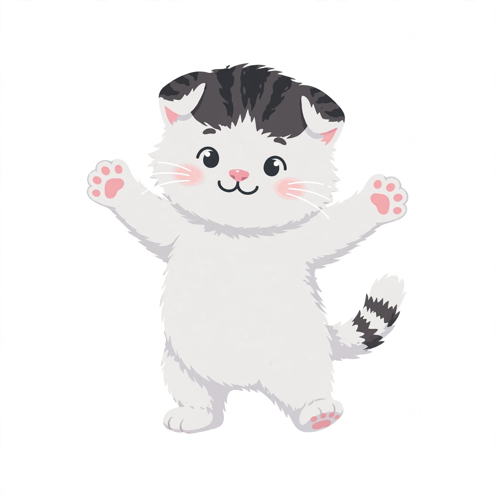
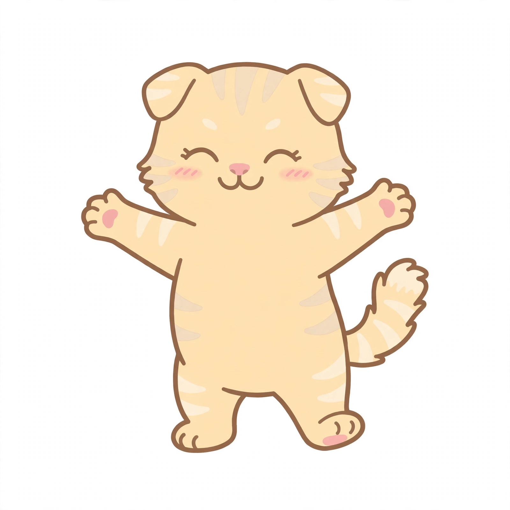
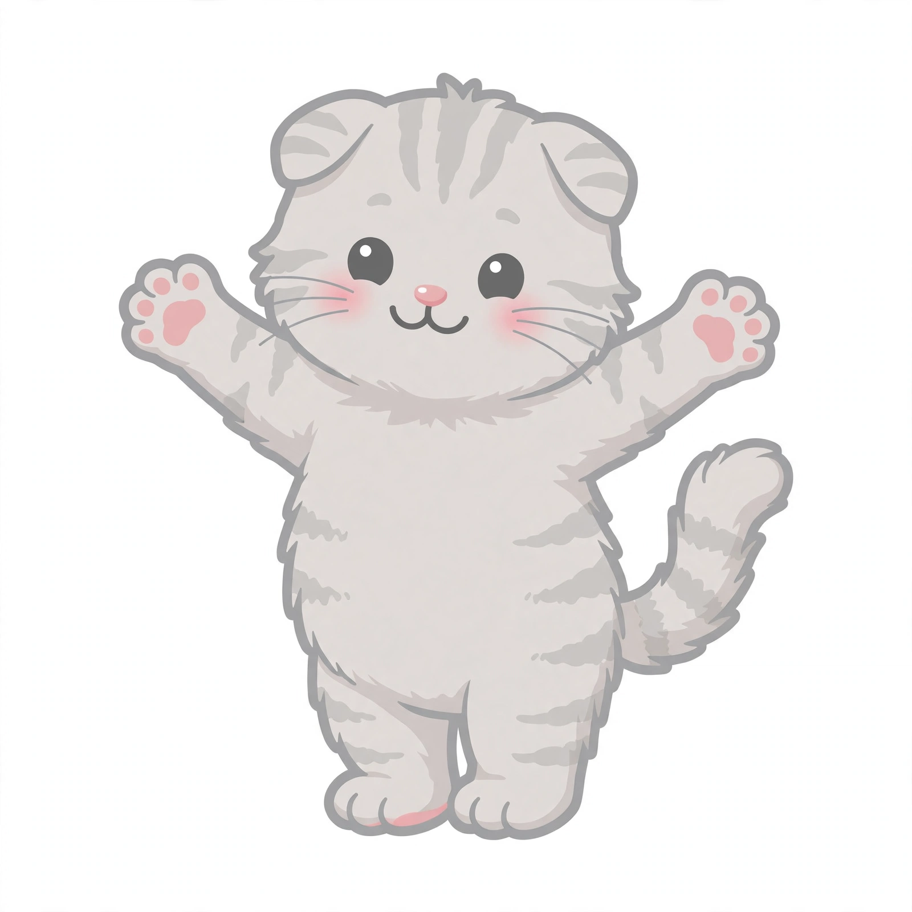
胡牌結算：贏家收「底 ＋ 總台 × 每台」貓糧（放槍者付一份、自摸三家各付一份）。四家起始貓糧相同；按「開始遊戲」套用並重置餘額，開局後要改請回開始畫面。
本遊戲只支援橫向：手機直拿時畫面會自動轉成橫向，不用按任何按鈕。iPhone 不支援網頁全螢幕（蘋果限制）時，「全螢幕」會改開頁內沉浸模式（收起頂欄、遊戲區放到最大）。
點「開始遊戲」即入桌並開啟音樂／音效（瀏覽器規定要先互動才能出聲）
鏡頭固定神來也式陡俯角・點下方手牌打牌
全螢幕 3D 麻將：湊齊 5 組牌 + 1 對將就胡牌！
🎥 這是真的 3D 場景（Three.js）：鏡頭像神來也一樣全程固定在陡俯角主視角，四家牌池、三隻大貓貓都入鏡，不用也無法拖曳轉視角。你的手牌只在下方 HUD 顯示，點那邊打牌。右上角「⚙️ 設定」選單裡可切回平面版、開關音效與音樂。
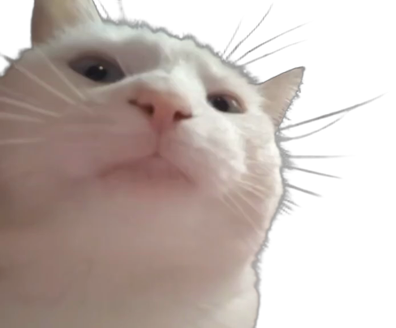
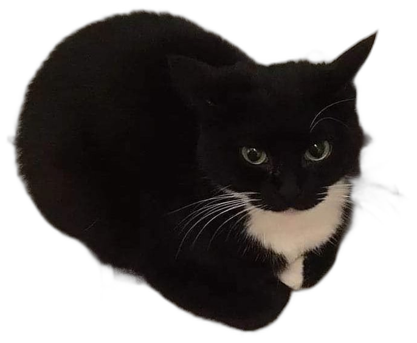
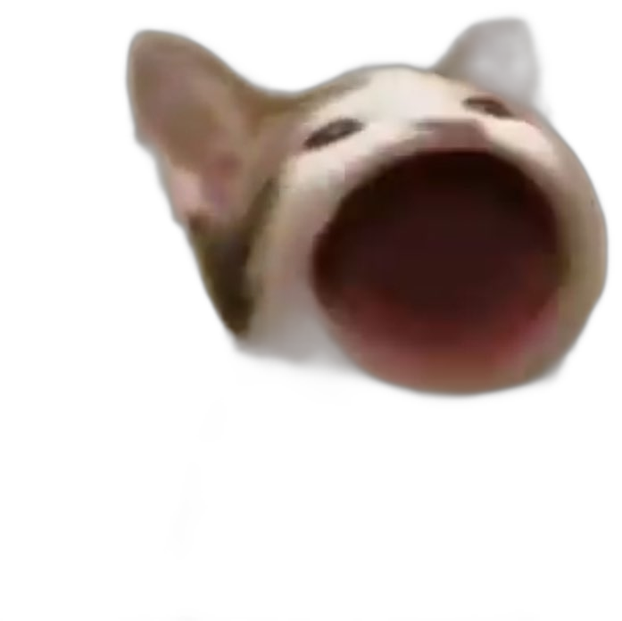
能抓到原圖的直接用原圖（標 📸 原圖），嵌入遊戲本體不熱連；少數抓不到乾淨原圖的（標 🎨 重繪補圖）才用重繪版補上，誠實標給你看。
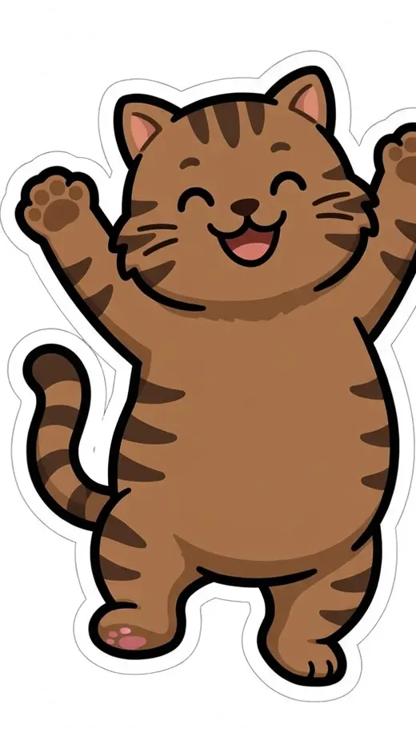
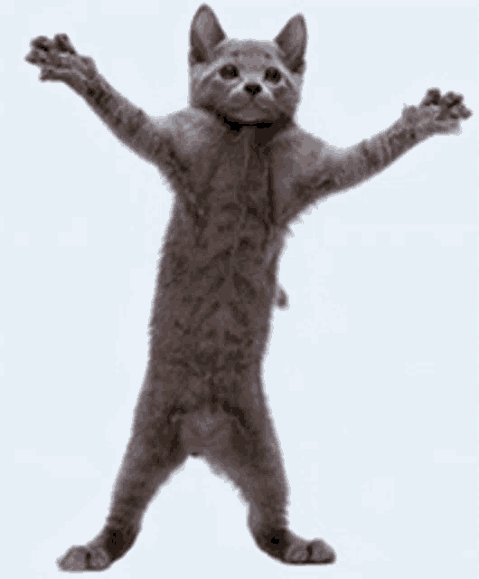
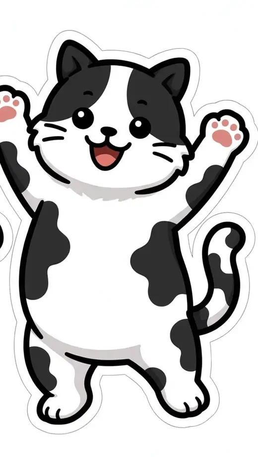
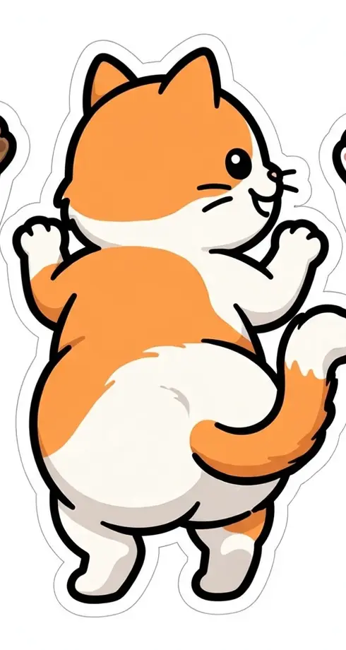
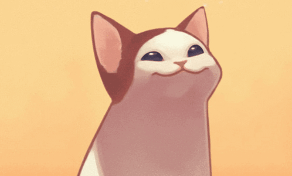
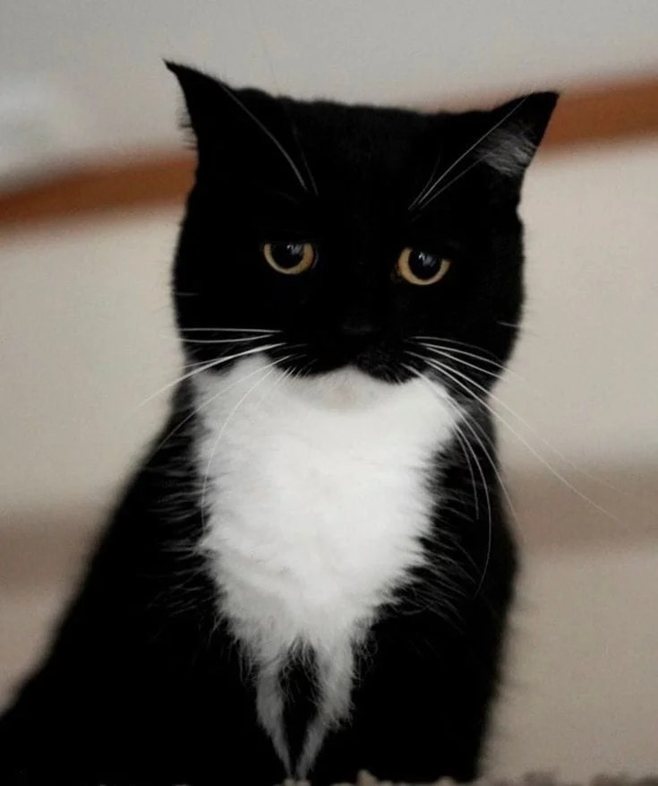
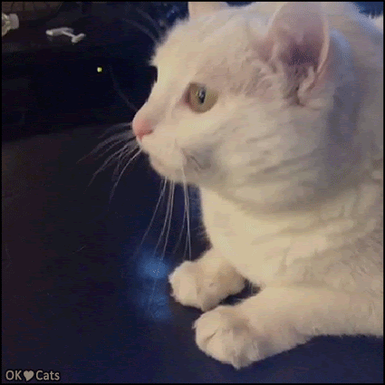
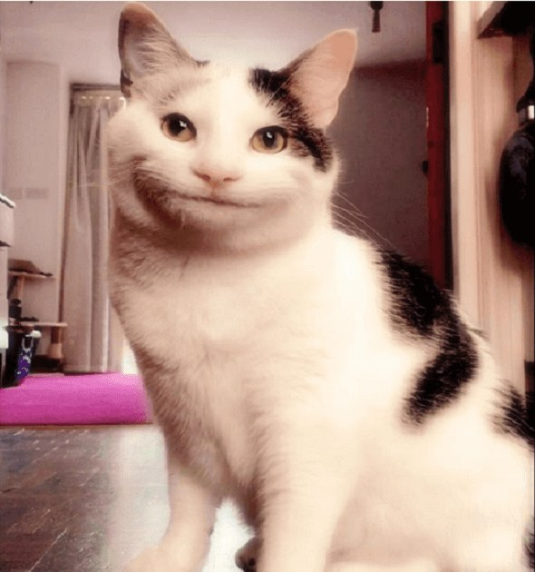
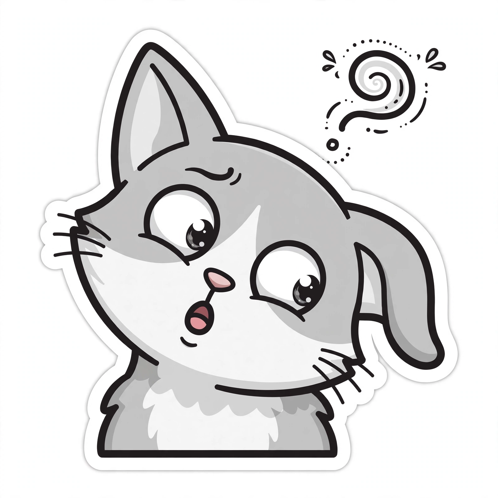